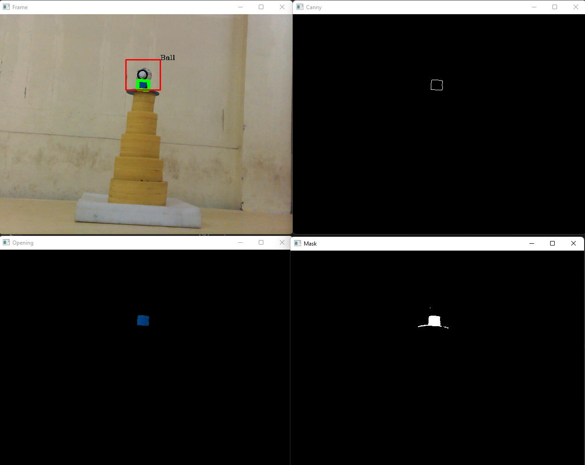

An image of ball-detection done using Python-opencv.
Computer vision is a process by which we can understand the images and videos how they are stored and how we can manipulate and retrieve data from them. Computer Vision is the base or mostly used for Artificial Intelligence. Computer-Vision is playing a major role in self-driving cars, robotics as well as in photo correction apps.
A simulation of a Newton's cradle i made using Simscape Multibody
Simscape Multibody (formerly SimMechanics™) provides a multibody simulation environment for 3D mechanical systems, such as robots, vehicle suspensions, construction equipment, and aircraft landing gear. You can model multibody systems using blocks representing bodies, joints, constraints, force elements, and sensors.